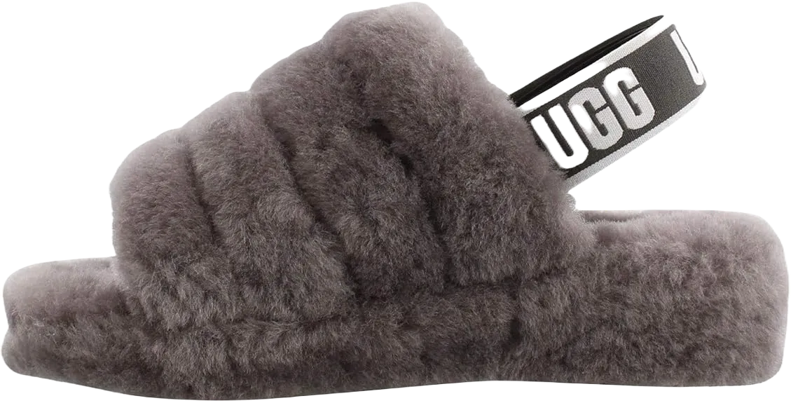
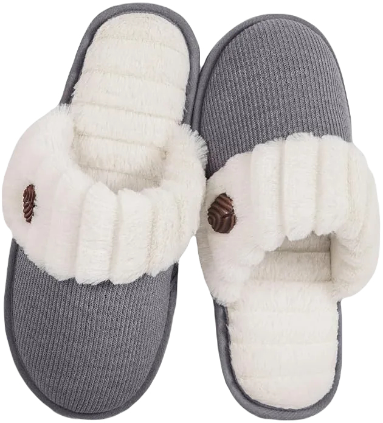
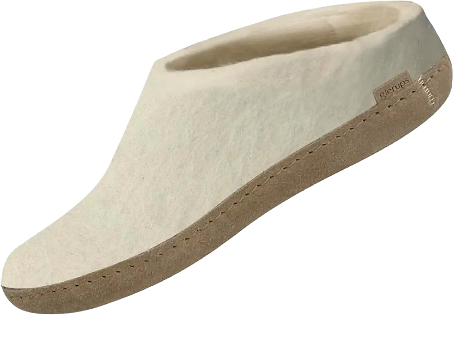
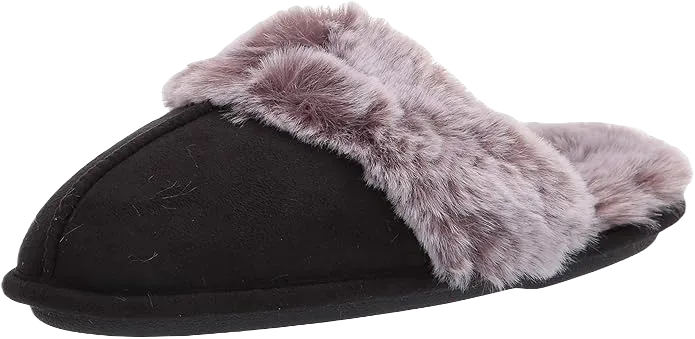
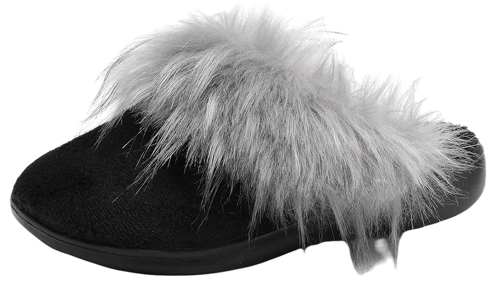
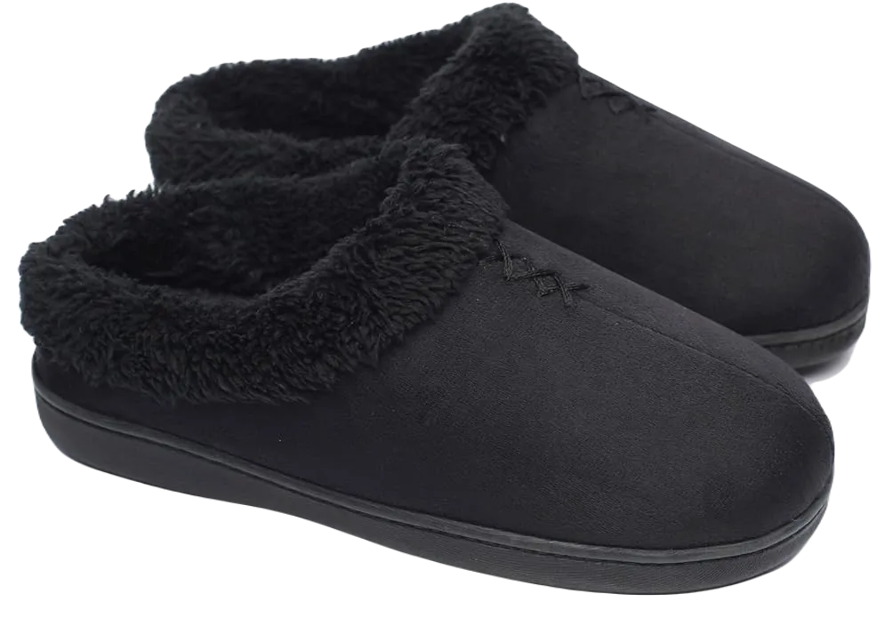
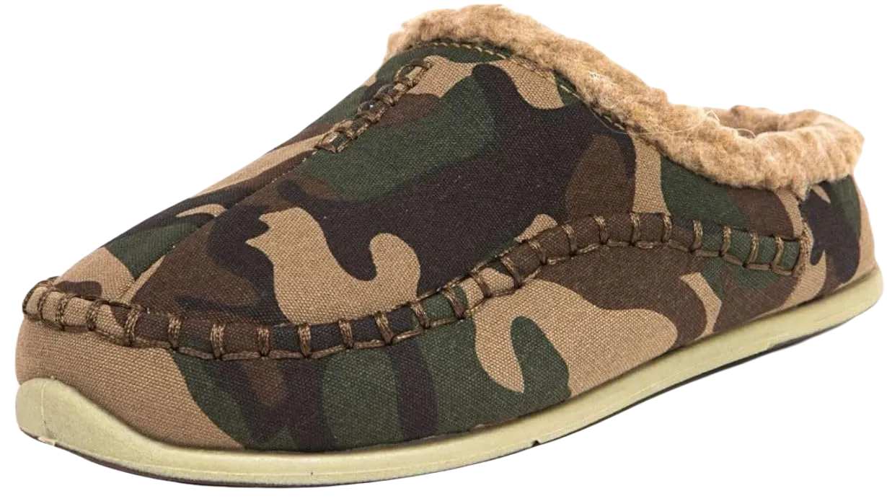
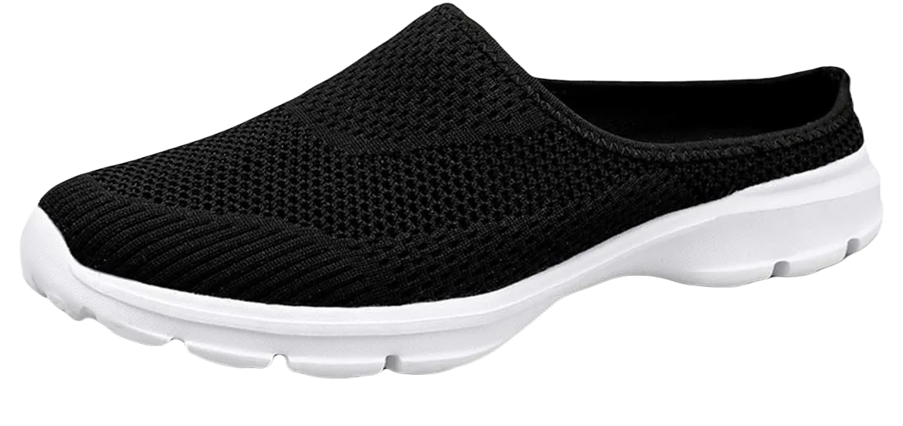
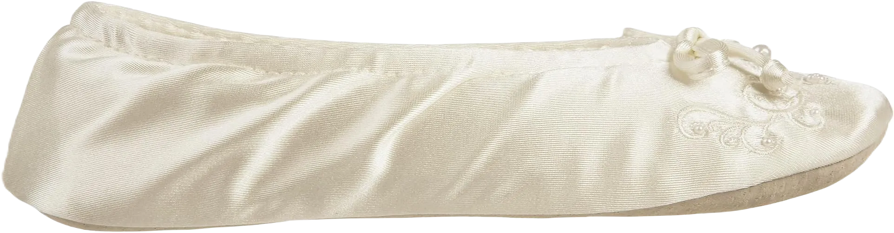

11 Best Women’s & Men Supportive House Shoes 2024
Certainly, investing in comfortable house footwear is never a loss. Shoes that offer comfort are truly a blessing. If you're looking for indoor slippers or clogs for household chores, they need to be reliable and relaxing, especially since you may wear them from dawn to dusk—particularly if you’re a housewife. Supportive house shoes should have special qualities like a flat, durable sole, slip-resistance, moisture-wicking properties, ultra-traction, and, above all, durability you can count on. However, finding the best supportive house shoes isn't an easy task.
There's a vast variety available, each offering unique features. Perhaps you're seeking a waterproof sole for better grip or wool uppers to make the shoes stylish and cozy at the same time. To help make the process easier for you, we've selected the best indoor shoes that perform as well as extravagant footwear. Each pair we've chosen has dedicated features focused on ensuring your comfort.
-
#1
Merrell Juno Clog Wool
.webp)
From Merrell, we present this ultra-soft and ergonomic slip-on shoe. Featuring a cozy wool upper, it offers the ultimate in comfort, ensuring your household chores are anything but dull and boring.
In addition to its comfort, the shoe boasts a fashion-forward appearance. The high-quality rubber sole provides excellent traction on sleek floors, while the EVA technology embedded in the midsole absorbs shocks and minimizes impact.
With this slip-on, you can walk briskly without worrying about sudden, annoying jerks, enjoying smooth and comfortable steps throughout the day. -
#2
UGG Women’s Fluff Yeah Slide Slipper
Ugg has crafted this footwear with a focus on indoor comfort and style. Its trendy design offers a variety of colors from neon to bold and warm to cool tones. The fluffy appearance pairs well with any outfit, and the resilient rubber outsole ensures long-lasting comfort and flexibility.
The 10mm leopard-printed sheepskin uppers are soft against the skin and provide warmth during colder days. The elastic strap with UGG branding offers a snug fit without causing any irritation.
This slip-on is ideal for women who need extra comfort for long hours at home, making it perfect for daily household tasks. -
#3
Home Top Slip-On Memory
This slip-on shoe is designed to work efficiently on smooth flooring, with a sober and decent appearance that reflects its well-made design. The rubber and leather sole offer excellent durability and gripping traction, making it a reliable choice. Its sandal-slipper style ensures maximum comfort.
The soft, squishy padding provides all-day comfort and a relaxing feel. The lining is made with moisture-wicking French terry material, ensuring your feet stay dry, even during the colder months, which also adds to its overall durability.
This shoe’s water-repellent feature makes it perfect for winter, keeping your feet warm and dry. However, its slip-on fit also makes it ideal for summer and autumn, providing comfort year-round. -
#4
Glerups Women’s Model B Slipper
A leather sole is always a great choice for a dainty appearance and reliable steps. The Glerups Women’s Model B slipper offers just that, with a high-quality leather sole combined with wool uppers. Perfect for winter and colder days, this slipper ensures warmth while preventing the chill. The double-layered inner sole adds extra comfort and relieves strain during long wear.
The wool midsole provides warmth, making it ideal for foggy, cold winters. Additionally, the springy, cushioned insole guarantees softness underfoot. The vegetable-tanned leather sole not only looks impressive but is also well-suited for indoor use.
Its natural wool is a fantastic way to keep your feet warm in an organic manner. It also absorbs moisture and dampness effectively, so you don’t have to worry about wet feet while working in the kitchen or other household chores. -
#5
Jessica Simpson Women’s Comfy
The Jessica Simpson Women’s slip-on, with its synthetic sole and durable materials, stands out as one of the best supportive house shoes. The thick memory foam provides exceptional comfort, ensuring your feet are well-cushioned and supported throughout the day.
The perfect sizing and design make it easy to wear, offering comfort even during long hours of standing. The thick foam keeps your foot in a cozy and supportive position, preventing discomfort during extended wear.
With its textured bottom sole, this slip-on enhances grip and traction, minimizing the risk of slipping or tripping. Whether you're walking briskly or navigating smooth floors, this shoe provides a secure, slip-free experience. -
#6
SOLLBEAM Fuzzy House Slippers
The SOLLBEAM Fuzzy shoe is one of the softest and coziest options for indoor environments. Its rubber sole offers unbeatable traction, ensuring a firm grip on the smoothest floors. Designed with premium materials and comfortable inner padding, this shoe maintains its shape even under pressure, making it a durable choice for women. The plush fur lining adds an extra layer of warmth, perfect for cold winter days.
The deep heel cup and narrow build provide excellent foot support, making the shoe more maneuverable. It also reduces high impacts and absorbs the effects of sudden jerks, enhancing your overall comfort.
Additionally, the outsole is designed for shock absorption, making every step feel cushioned. Plus, you can machine wash these slippers, ensuring they stay clean and fresh for longer periods of use. -
#7
Crocs Men’s and Women’s Classic Clog
.webp)
This is one of the most popular shoes for household purposes, thanks to its ergonomic design and comfortable fit. Made with 100% synthetic materials and an imported synthetic sole, it offers durability and ease of wear. The heel height is measured at 8 inches from the arch, making walking and moving around effortless.
The heel also features a 1-inch drop, allowing you to stand comfortably for extended periods. With its excellent traction and lightweight build, this shoe feels natural on your feet, letting you move with ease and speed.
The upper is designed with ventilation holes to ensure proper airflow, keeping your feet cool and dry throughout the day. -
#8
Ofoot Women’s Warm Clog Slippers
Being at home means you can fully relax and unwind, making a comfortable and supportive slipper a necessity. The Ofoot Women’s shoe features a rubber sole paired with soft, premium velvet fleece, providing warmth and comfort during cold winters. Its design is both practical and pretty, ensuring your feet stay cozy.
The high-density memory foam padding adds extra comfort, while the TPR rubber sole ensures better traction on various surfaces. The shoe’s high-back design offers a simple yet elegant appearance, making it feel as relaxing as meditation when worn.
Available in four solid colors—grey, black, navy blue, and purple—this slipper caters to both style and comfort. Additionally, it comes in two different designs, allowing you to choose the one that best suits your preferences. -
#9
Deer Stags Men’s Nordic Scuff Slipper
Since the establishment of Drag Deer Footwear Company, they have built a strong foundation of trust and quality assurance, earning positive reviews from many satisfied customers. People truly appreciate each shoe they produce.
The Nordic Scuff is the ideal men’s slipper for household tasks. Crafted from 100% fabric and textile materials, it offers exceptional comfort and a relaxed feel underfoot. Additionally, the synthetic sole ensures a fully traction-oriented outsole, enhancing stability while walking.
The snug-fitting design and cozy interior provide a warm and soothing experience for your feet, ensuring you enjoy complete comfort throughout your day at home. -
#10
ChicNChic Women Comfortable Cotton Kni
If you're seeking the utmost comfort, trying the ChicNChic slipper would be a great choice. Its rubber sole provides excellent grip and traction on various floors, allowing you to walk and run comfortably without worrying about slipping or tripping. The soft and elastic insoles, along with the upper, ensure your feet remain maximally comfortable.
Made from pure organic velvet and featuring a soft scuff design, these slippers promote proper ventilation for foot health. The interior is specially treated for softness and resilience, enhancing overall coziness during wear.
Additionally, the water-resistant and thermoplastic rubber sole provides anti-slip protection, giving you confidence to stand and walk on gooey or sticky surfaces without the fear of slipping or injuring yourself. -
#11
Isotoner Women’s Satin Ballerina Slipper
This shoe is a stylish and sophisticated choice for house footwear. Its slip-on design and classic black color make it a favorite among women with refined tastes. The suede sole and soft material ensure comfort for your feet, while the flexible construction provides a snug fit for various activities. The cute little bow on top adds a charming touch to the overall appearance.
The breathable fabric is a great feature for those who find themselves busy with tasks, promoting proper ventilation and oxygen flow to maintain foot health. Furthermore, the durable, high-quality materials assure you of its long-lasting construction.
This shoe is incredibly lightweight, weighing just 8 ounces, allowing you to feel light and agile in your movements.